UDN
Search public documentation:
LightingReferenceJP
English Translation
한국어
Interested in the Unreal Engine?
Visit the Unreal Technology site.
Looking for jobs and company info?
Check out the Epic games site.
Questions about support via UDN?
Contact the UDN Staff
한국어
Interested in the Unreal Engine?
Visit the Unreal Technology site.
Looking for jobs and company info?
Check out the Epic games site.
Questions about support via UDN?
Contact the UDN Staff
Lighting Reference（ライティングのリファレンス）
概要：LightColor（ライトの色）およびライティングのプロパティに関する総合リファレンスです。 修正ログ：最終更新は、Michiel Hendriksによるバージョン3323用にbDirectionalCoronaの追加、Jason Lentz （Main.DemiurgeStudios）による管理環境向上のためのドキュメントの細分化。原本筆者はLode Vandevenne （Main.UdnStaff）はじめに
ここでは、LightColor（ライトの色）セクションとライティングセクションにあるライティングのプロパティ全項目についてご説明します。これらの機能はLightActors（ライトアクタ）をはじめすべてのアクタに利用できます。いくつかのプロパティについては表の後でさらに詳しくご説明します。LightColor
LightColorでは、明るさとライトの色を変更できます。色彩設定は[ライトのプロパティ]→[LightColor（ライトの色）]で行います。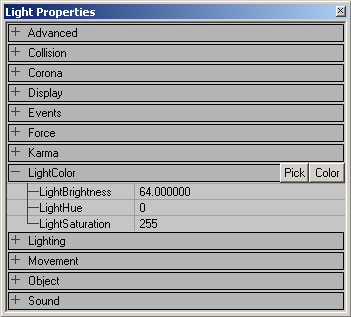
下表はLightActor関連の3つのプロパティの解説とデフォルト設定の一覧です。| プロパティ | 解説 | デフォルト設定 |
|---|---|---|
| LightBrightness（ライトの明るさ） | ライトの照明量を調整します。詳細説明は、below （下記）をご覧下さい。 | 64.0 |
| LightHue | 照明の色合いを調整します。詳細説明は、 below （下記）をご覧下さい。 | 0 |
| LightSaturation | 照明の彩度レベルや色純度を調整します。詳細説明は、below （下記）をご覧下さい。 | 255 |
Light Brightness
LightBrightnessでは、ライトの明暗を調整します。ライトの値には255以上も入力できますが、不自然に光の切れが良くなる輝度分布となってしまいます。逆に、この値に0を入力すると、光は全くなくなります。下の各イメージ図のLightBrightnessは上から順に64、128、255です。
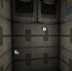

Light Hue
LightHueでは、ライトの色を変更します。例えば、LightHueの0は赤、40は黄、80は緑、160は青、200は紫、255は再び赤です。後述の通り、この変化がわかるのはLightSaturationが255以下の場合だけです。下のイメージ図ではLightSaturation＝128、そしてLightHueは上から順に0、64、128、そして192です。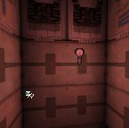
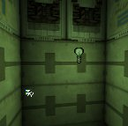


Light Saturation
LightSaturationでは色の強さを調整します。デフォルト値の255だと、ライトは白です。またそれ以下ならLightHueで定義した色合いが反映されます。低くなるほどに色の強さが増します。下のイメージ図のLightSaturationは順に、255、192、128、そして0となっています。
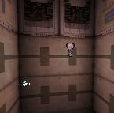

 ライトが選択されていない場合は、電球の絵がライトのエミットと同色になる一方、ライトを選択すると、電球の色は[Show Selection Highlight（ハイライト選択の表示）]を無効にしない限り、常に緑となります。
ライトが選択されていない場合は、電球の絵がライトのエミットと同色になる一方、ライトを選択すると、電球の色は[Show Selection Highlight（ハイライト選択の表示）]を無効にしない限り、常に緑となります。
 ライトの色を決めるもっと簡単な方法をご紹介しましょう。[色]のボタンを押すと、Windows Color Dialog Box（ウィンドウズのカラーダイアログボックス）が表示されます。そこで、任意の色を選択し OKボタンを押してください。
ライトの色を決めるもっと簡単な方法をご紹介しましょう。[色]のボタンを押すと、Windows Color Dialog Box（ウィンドウズのカラーダイアログボックス）が表示されます。そこで、任意の色を選択し OKボタンを押してください。

 また、[Pick（採取）]のボタンを押すと、マウスカーソルがスポイト表示になって、ビューの中のあらゆる色を採取できるようになります。
また、[Pick（採取）]のボタンを押すと、マウスカーソルがスポイト表示になって、ビューの中のあらゆる色を採取できるようになります。

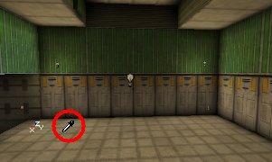
ライトの明るさが足りない場合は、同じ位置に最高輝度のライトを必要な個数だけ追加します。このライトを重ねる方法なら、黒いテクスチャがほとんど白になるほどの明るい照明が可能です。Lighting（ライティング）
このプロパティには、さらに多くの調整用変数が用意されています。下の表はLightActorの解説とデフォルト設定の一覧です。いくつかのアクタについては、後ほどさらに詳しくご説明します。
| 変数 | 解説 | デフォルト |
|---|---|---|
| bActorShadows | 「有効」ならアクタに影がつきます。 | 無効 |
| bCorona | Skins（スキン） を利用したライトでコロナを表現します。詳細説明は、 Special Lighting Features （ライティングの特殊機能）の文書をご参照下さい。 | 無効 |
| bDirectionalCorona | コロナが指定した方向のみに光を発します。 | 無効 |
| bDynamicLight | 設定を「有効」とすると、ライトの照明が動くようになります。 DynamicLights（ダイナミックライト）は一般のライトよりも大きい負荷をプロセッサにかけますのでご注意下さい。 | 無効 |
| bLightingVisibility | ラインの検証により、アクタのライティングの鮮明度を判断します。 | 有効 |
| bSpecialLit | ライトの作用する対象物と、しない対象物をマニュアル設定するかどうかのトグルです。詳しくは below （下記）をご覧下さい。 | 無効 |
| LightCone | Light Effect（ライトの効果）の LE SpotLight を利用している場合、スポットライトの照明角度を定義します。詳しくはbelow （下記）をご覧下さい。 | 128 |
| LightEffect（ライトの効果） | 作成したライトへの適用のための既成効果です。詳しくは below （下記）をご覧下さい。 | LE None（ライト効果なし） |
| LightPeriod | 特別なLight Types （ライトのタイプ）の頻度を定義します。詳しくはbelow （下記）をご参照下さい。 | 32 |
| LightPhase（ライトの段階変化） | Light Types （ライトのタイプ）やLight Effects （ライトの効果）を徐々に弱めたり、そのままフェードアウトさせる設定をします。詳しくはbelow （下記）をご参照下さい。 | 0 |
| LightRadius（ライトの半径） | ライトの半径のmultiplierです。詳細はbelow （下記）をご参照下さい。 | 64.0 |
| LightType | ライトの「安定性」を定義します。詳しくはbelow （下記）をご参照下さい。 | LT Steady（LT_静止） |
Special Lit
[ライティング]メニューの[ライトのプロパティ]で[bSpecialLit]の項を[有効]に設定します。BSP surface（BSPサーフェス）のプロパティでもSpecial Lit を設定できます。
 Special Lit の対象となったサーフェスは、「bSpecialLit ＝有効」と設定したライトからのみ照明され、「bSpecialLit ＝無効」と設定したライトの光は当たりません。逆に、Specia Lit（特殊照明）の設定されていないサーフェスは「bSpecialLit ＝無効」のライトからのみ照明されて、「bSpecialLit ＝有効」のライトの光は当たりません。
例えば、イメージ図は緑と赤の光に照らされた普通の小部屋ですが、どのウォールやライトにもSpecial Lit は設定されていません。
Special Lit の対象となったサーフェスは、「bSpecialLit ＝有効」と設定したライトからのみ照明され、「bSpecialLit ＝無効」と設定したライトの光は当たりません。逆に、Specia Lit（特殊照明）の設定されていないサーフェスは「bSpecialLit ＝無効」のライトからのみ照明されて、「bSpecialLit ＝有効」のライトの光は当たりません。
例えば、イメージ図は緑と赤の光に照らされた普通の小部屋ですが、どのウォールやライトにもSpecial Lit は設定されていません。
 ここで、ウォールのひとつをSpecial Lit に設定します。すると、この部屋にSpecial Lit がないため、その壁は黒くなってしまいます。
ここで、ウォールのひとつをSpecial Lit に設定します。すると、この部屋にSpecial Lit がないため、その壁は黒くなってしまいます。
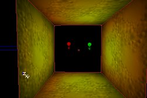
赤色のライトのSpecial Lit の設定を有効にすると（緑色は無効のまま）、すべてのウォールは緑色に、特殊照明の壁は赤くなります。 環境光を放つアンビエント ライトを設置すると、通常設定とSpecial Lit 設定のいずれのウォールをも照らすので、Special Lit が存在しなくてもSpecial Lit 設定のウォールが黒くならずにアンビエント ライトの色を呈します。イメージ図では、青っぽいアンビエント ライトが使われています。
環境光を放つアンビエント ライトを設置すると、通常設定とSpecial Lit 設定のいずれのウォールをも照らすので、Special Lit が存在しなくてもSpecial Lit 設定のウォールが黒くならずにアンビエント ライトの色を呈します。イメージ図では、青っぽいアンビエント ライトが使われています。
 注：ライティングのリビルドをしてはじめて、設定した効果が反映されます。また、ライトの設定変更を行った場合も、次にリビルドしてから設定内容が反映されます。
注：ライティングのリビルドをしてはじめて、設定した効果が反映されます。また、ライトの設定変更を行った場合も、次にリビルドしてから設定内容が反映されます。
LightCone
LightCone の設定では、[LightEffect]の[LE_SpotLight]で設定したスポットライトのコーン（円錐形のシェード）のサイズを変更できます。この値が大きくなるにつれ、照明範囲も広がります。もちろん実際の照明範囲は、ライトから照らすサーフェスまでの距離にも依存します。LightCone とLightRadiusとでは定義内容が違うのです。LightRadius はスポットライト光線の長さを定義しますが、LightCone は円錐形シェードの開き角度を定義します。
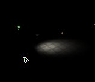

LightEffect
LightEffectは特殊な視覚効果で、ディスコの照明風、円筒形、そして太陽光の3種類です。LightEffectsへは、[Lighting（ライティング）]→[LightEffects ]で移動します。 注：現在正常機能しないプロパティは以下の通りですので、ご注意下さい。- LightEffectsはStaticMeshes静的メッシュ上では機能しますが、頂点ベースに限られるため、BSPジオメトリのLightEffectsの結果と比べると明らかに見劣りします。
- LightEffects はアニメーション設定しても動きません。LightEffects を選択した時は動いたように見えますが、リビルドやゲームの実行を行った途端に効果の動きが停止します。
- 以下のLightEffects は既に陳腐化しているためご説明しません。
- CloudCast（雲のキャスト）
- TorchWaver（松明の揺らめき）
- FireWaver（炎の揺らめき）
- WateryShimery（水のようなシメリー）
- *投影機能*を使うと*ずっと*効果的なライティングを行えます。（[ProjectorsTableOfContents]（投影機能の目次）をご覧下さい。）
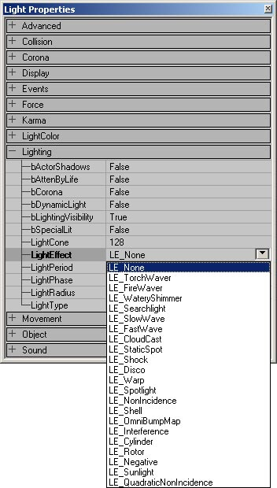
ここからは使えるLightEffects についてご説明します。 *LE_None *: LightEffects のデフォルト設定で、一様のライトになります。このプロパティとLightTypeのLT_Noneとを混同しないようにしましょう。LT_Noneはライトを消灯するのに対し、LE_None はライトを点灯したままにするものです。 *LE_SearchLight*：旋回する光線を作ります。旋回速度はLightPeriod のスライダーを左右にドラッグして設定します。
*LE_SearchLight*：旋回する光線を作ります。旋回速度はLightPeriod のスライダーを左右にドラッグして設定します。
 *LE_SlowWave*：光をゆっくりとうねらせる効果を設定します。
*LE_SlowWave*：光をゆっくりとうねらせる効果を設定します。
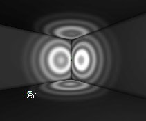
*LE_FastWave*：光を速くうねらせる効果です。 *LE_Shock（LE_ショック）*：LE_FastWaveに少し似ていますが、光をより広範に波打たせる効果です。
*LE_Shock（LE_ショック）*：LE_FastWaveに少し似ていますが、光をより広範に波打たせる効果です。
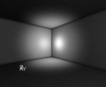
*LE_Disco（LE_ディスコ）*：ライトをディスコの照明風に動かす効果です。 *LE_Warp（LE_ワープ）*：LE_Noneのような光になります。
*LE_NonIncidence *および*LE_QuadraticNonIncidence（LE_二次入射光線なし）*：この二つはLE_Noneのようですが、球状の光源の端から光が徐々に弱くなる効果がほとんどないため、光の中心に近づくほどより明るく、LightRadius（ライトの半径）に到達したライトが消える所までの明るさの変化度がより急激になっています。QuadraticNonIncidence（LR_二次入射光線なし）は両者の中でもよりはっきりとした効果となります。
*LE_Warp（LE_ワープ）*：LE_Noneのような光になります。
*LE_NonIncidence *および*LE_QuadraticNonIncidence（LE_二次入射光線なし）*：この二つはLE_Noneのようですが、球状の光源の端から光が徐々に弱くなる効果がほとんどないため、光の中心に近づくほどより明るく、LightRadius（ライトの半径）に到達したライトが消える所までの明るさの変化度がより急激になっています。QuadraticNonIncidence（LR_二次入射光線なし）は両者の中でもよりはっきりとした効果となります。
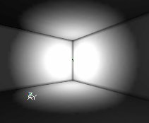
*LE_Shell（LE_外輪郭）*：丸く外側を囲むライトを作成します。ウォールが丸い光の枠の中にある場合のみこの効果が確認できます。この球の半径は、LightRadius（ライトの半径）で定義します。 *LE_Cylinder*：これは球状ではなく円筒状に光るライトです。縦長の円筒状に光り、回転不能で、LightRadius（ライトの半径）で定義される高さや半径の個別修正も出来ません。LE_Cylinderの照明範囲は、全てのライトの中でも最もひときわ大きく、LE_NonIncidence よりもさらに大きいほどです。一番目のイメージとLE_NonIncidenceのイメージを比べてみてください。二番目のイメージではライティングの円筒形状の様子をご覧いただけます。
*LE_Cylinder*：これは球状ではなく円筒状に光るライトです。縦長の円筒状に光り、回転不能で、LightRadius（ライトの半径）で定義される高さや半径の個別修正も出来ません。LE_Cylinderの照明範囲は、全てのライトの中でも最もひときわ大きく、LE_NonIncidence よりもさらに大きいほどです。一番目のイメージとLE_NonIncidenceのイメージを比べてみてください。二番目のイメージではライティングの円筒形状の様子をご覧いただけます。
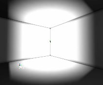
*LE_Rotor（LE_回転）*：回転する光線の集合です。 *LE_Sunlight（LE_太陽光）*：無限遠からの光をシミュレーションします。詳細は、 Sunlight （太陽光?）をご覧下さい。
*LE_Sunlight（LE_太陽光）*：無限遠からの光をシミュレーションします。詳細は、 Sunlight （太陽光?）をご覧下さい。
 LightEffects は複数のLightTypeを組み合わせた利用も可能です。例えばLE_DiscoとLT_TexturePaletteLoopを組み合わせてディスコ照明の色をぐるぐる変化させたり、LE_SpotLight とLT_Pulseを組み合わせてパルス状に点滅するスポットライトにすることが出来ます。
LightEffects は複数のLightTypeを組み合わせた利用も可能です。例えばLE_DiscoとLT_TexturePaletteLoopを組み合わせてディスコ照明の色をぐるぐる変化させたり、LE_SpotLight とLT_Pulseを組み合わせてパルス状に点滅するスポットライトにすることが出来ます。
LightPeriod
LightEffectのLE_SearchLight ここでは、LightTypesのLT_Pulse、LT_SubtlePulse、LT_TexturePaletteLoop、そしてLightEffectのLE_SearchLightの各店頭周期の変更を行います。数値が低くなると実行時のアニメーション速度が速くなります。また、数値が「0」なら全く動きません。また、パルスとSubtlePulse（微小パルス）については「0」が最速の設定となります。 LightPeriod は他のLightEffects やLightTypes に作用しませんし、LT_Strobe も点滅しますが、これにも作用しません。 （ライトのフェーズ）LightPhase（ライトのフェーズ）
アニメーションのサイクルで照明が始まるタイミングを設定します。LightPhaseはLightEffects とLightTypesのみに作用し、LightPeriod との連携も可能です。例えば、二つの点滅光（LT_Pulse）の一方をフェードインし、もう一方をフェードアウトしたいという場合、このスライダーで設定を行います。 イメージには、LightType（ライトの種類）LT_Pulse（LT_パルス）による二つのライトがあり、一つはLightPhase（ライトのフェーズ）設定値が「0」、もう一方は「128」と設定されています。アニメーションのサイクルは255段階ですから、128は全アニメーションのちょうど真ん中になります。つまり、一つ目のライトがアニメーション（フェードアウト）を開始する頃、二つ目は既にアニメーション（フェードイン）のちょうど中間だということです。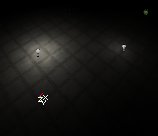
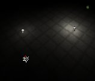
（ライトの半径）LightRadius（ライトの半径）
LightRadius（ライトの半径）では、光の輝く範囲を調整します。プロパティの数値が直接実際の照明範囲となる訳ではなく、照明範囲に相乗作用する定義のうちのひとつです。 数値「0」だと全く光のない状態で、数値が大きくなるほど球状の光の半径は大きくなります。例えば、イメージのひとつ目のライトはLightRadius（ライトの半径）が「16」で、ふたつ目のライトはLightRadius（ライトの半径）が「32」の設定です。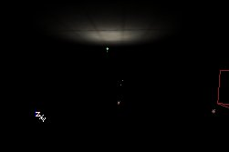
 （ライトの種類）
（ライトの種類）
LightType（ライトの種類）
LightTypesは、揺らめく炎やストロボなど、長時間にわたりライトの明るさを変え続けます。LightTypesを変更するには、Light Properties（ライトのプロパティ）→Lighting（ライティング）→LightType（ライトの種類）へと移動します。ここで、LightTypeのリストから採用するものを選択します。 LightTypesはライトが動く場合のみ作用します。bDynamicLightは設定を「有効」にしておきます。 ほとんどのLightTypesはアニメーション化であるため、筆者は動画GIFを使います。
LT_None：これを選択するとライトは全く発光しない、オフの状態になります。
ほとんどのLightTypesはアニメーション化であるため、筆者は動画GIFを使います。
LT_None：これを選択するとライトは全く発光しない、オフの状態になります。 LT_Steady ：デフォルトで有効で、ライトをずっと点灯した状態にします。
LT_Steady ：デフォルトで有効で、ライトをずっと点灯した状態にします。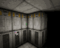
LT_Pulse：ライトのフェードオンとオフを繰り返します。この効果の点滅スピードは、LightPeriod で変更できます。LightPeriod が「0」に設定されると点滅スピードは最速となり、「255」であれば最も遅くなります。 LT_Blink:ライトをランダムに点滅させる効果ですが、オンの状態がかなり多いものです。単に固定ライトのように見えることもありますが、LightPeriod 設定のスライダを上げると、効果は再び作用します。LightPeriod のスライダが効果に与える作用はこれだけです。
LT_Blink:ライトをランダムに点滅させる効果ですが、オンの状態がかなり多いものです。単に固定ライトのように見えることもありますが、LightPeriod 設定のスライダを上げると、効果は再び作用します。LightPeriod のスライダが効果に与える作用はこれだけです。 LT_Flicker:このライトはランダムにオンオフを繰り返しますが、オンよりもオフの状態が多くなります。
LT_Flicker:このライトはランダムにオンオフを繰り返しますが、オンよりもオフの状態が多くなります。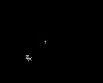
LT_Strobe:できる限り早く点滅するライトです。この効果のスピードは変更できず、LightPerios（ライトの周期）には全く影響しません。LT_BackdropLight：LT_Noneと全く同じライトに見えます。
LT_SubtlePulse:パルスと同じ効果ですが、より細かく点滅します。 LT_TexturePaletteLoopとLT_TexturePaletteOnce:数色の光をループさせる場合に使います。詳細はTexturePaletteLoop （[特殊ライティング機能#TpL][テクスチャパレット ループ]）のセクションでご説明します。
LT_TexturePaletteLoopとLT_TexturePaletteOnce:数色の光をループさせる場合に使います。詳細はTexturePaletteLoop （[特殊ライティング機能#TpL][テクスチャパレット ループ]）のセクションでご説明します。LT_FadeOut:LT_Noneと全く同じに見えます。
Unlit（アンリット）
Light Propertiesにはない、BSPのライティングに反映するもうひとつの設定はSurface Properties（サーフェスプロパティ）に入っています。ここで、BSPサーフェスに対してUnlit（アンリット）を設定できます。サーフェスのUnlit（アンリット）を有効にすると、常に最も明るい状態で、あらゆるライトやAmbient Lighting（アンビエント ライト）の影響を受けません。また、光がまったくない状態でも、このサーフェスは最も明るい状態のままです。例えば、イメージは暗い赤色光の部屋ですが、ひとつだけUnlit（アンリット）設定のウォールがあるのをご確認いただけるでしょう。